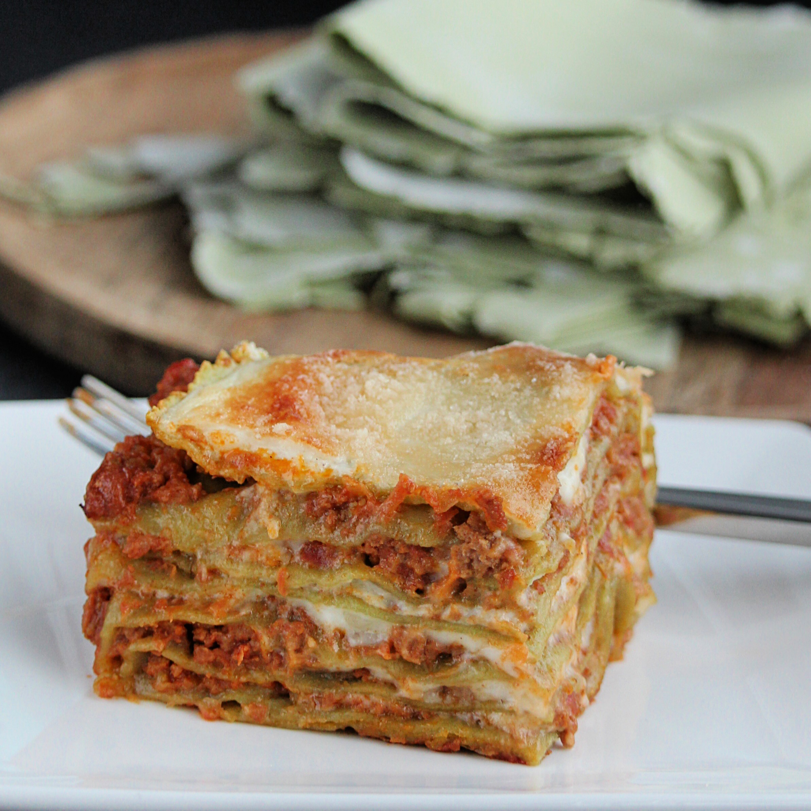

Lasagne Verdi alla Bolognese
Description
This is an adaptation of the official lasagne from the Bolognese Chamber of Commerce. I've made a couple of changes suggested to me by people from the area, such as which meat and wine to use or if there should be milk added or not. One thing never in question, though, is the green lasagne sheets. These are a must. The ragu is an authentic sauce, simple without garlic or herbs and spices. Using fresh pasta keeps you from having to pre-boil it.

Ingredients
Ragu:
- 1 (3 ounce) package pancetta, minced
- ½ cup diced carrot
- ½ cup diced celery
- ½ cup diced yellow onion
- 1 tablespoon olive oil
- 7 ounces ground beef
- 6 ounces ground pork
- ½ cup dry red wine
- 1½ cups plain tomato sauce
- 2 cups vegetable broth, or more as needed
Pasta:
- ¼ cup water
- 1 pinch salt
- ½ (8 ounce) package frozen spinach
- ½ (16 ounce) package gluten-free all-purpose baking flour
- 2 medium eggs, at room temperature
- salt to taste
- ½ cup whole milk